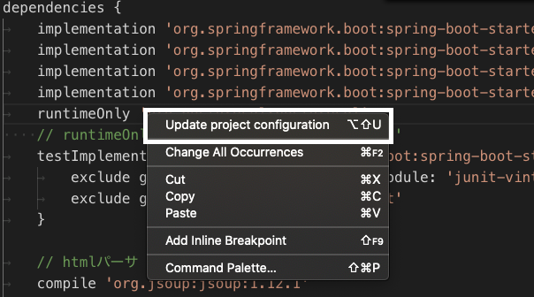

2019-11-20 VSCodeでJavaのGradleプロジェクトの依存性を更新する方法 Gradleを変更した際にどうしたら変更がプロジェクトに反映されるのか分からずハマったので、解決方法を書きます。 build.gradleに依存性を追加した時に、そのままではプロジェクトにパッケージが追加されません。 更新の際にはbuildd.gradleファイルを開いて、右クリック > Update Project Configurationを押します。  そうすると、依存性が追加されているはずです。 短いですが、以上です。 Newer Java製の静的サイトジェネレータ「Orchid」を解説する Older HerokuのPostgreSQLにSpringアプリケーションから接続する